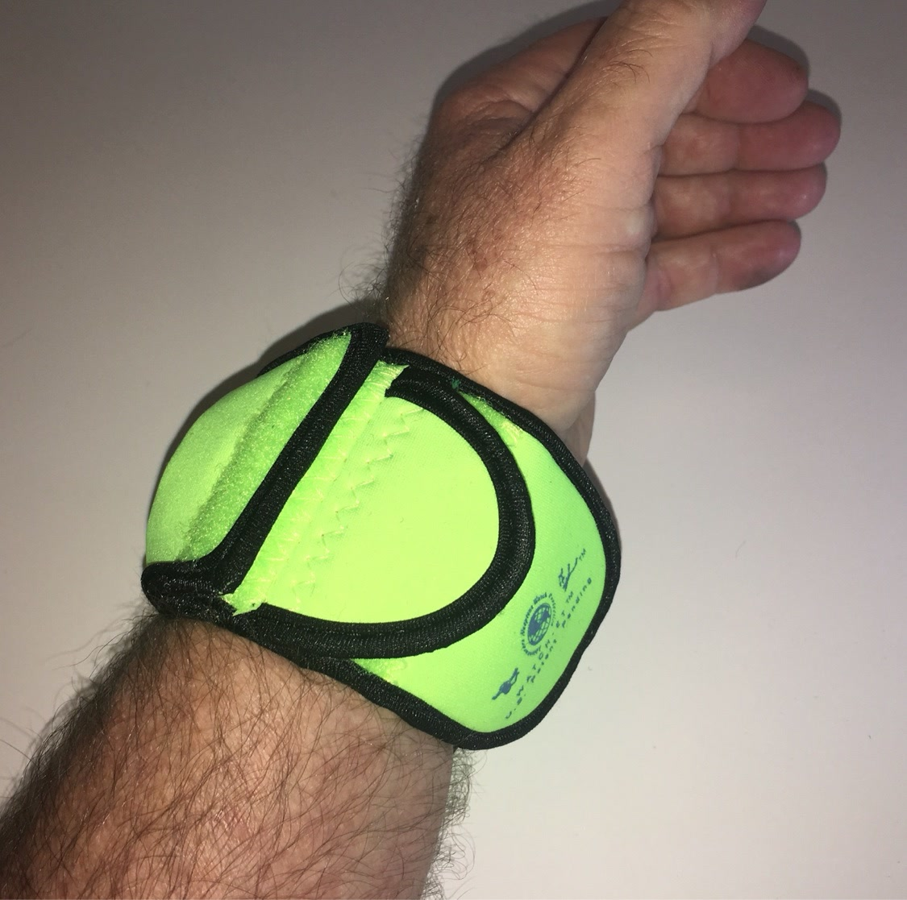

From the blog
Key Lime: Bright Gear That Is Easy to Spot
October 27, 2026

Some gear is meant to blend in. Key Lime is not that gear. It is bright, bold, and easy to spot at a glance, and that brightness is useful, not just fun. When your watch is covered in Key Lime, you can find it fast, see it clearly, and know right away where it is. Here is where that bright color earns its keep.
1. Easy to find in a packed bag
Most bags are dark inside. A watch tossed in a pocket or a pouch can vanish among chargers, cords, gloves, and tools. Key Lime stands out against all of that. Open the bag, scan once, and there it is. No digging, no dumping everything out on a table, no second look. If you take your watch off during a workout, a job, or a long drive, that quick find matters more than you think.
2. Easy to spot on the trail and on the water
Outside, gear gets set down and forgotten. You rest on a rock, you wade to shore, you set your watch aside while you rig up or take a break. A bright sleeve catches your eye before you walk away. On a trail, in tall grass, or on a boat deck, Key Lime is hard to leave behind. That one glance can save you a long walk back, or a lost watch altogether.
3. Bright does not mean soft
A bright color might look like a fashion choice, but the sleeve underneath is built for work. The neoprene guards the case and the face from knocks, scrapes, and daily wear. The flap closes over the face, and the side pocket keeps small essentials close. Key Lime looks loud and still does the quiet job of keeping your watch safe, day after day, in rough places.
4. Clear to see in low light
Early mornings, late evenings, and dim garages are when small gear goes missing. You reach for your watch in the dark and grab the wrong thing, or you miss it entirely. Key Lime shows up better than a dark sleeve in that low light. It is not a light and it is not a signal, but it gives your eyes something to lock onto fast when you are tired and moving quick.
5. A bright pick that still goes with everything
Bright gear can feel like a big statement, but Key Lime works because it is simple. It is one clean, vivid color, no pattern and no clutter. It looks right on a trail, at the gym, on a boat, or at a weekend cookout. If you like gear that stands out without shouting, this is the pick. Wear it proud, use it hard, and let it be the easiest thing in your kit to find.
Good gear should work hard and be easy to keep track of. Key Lime does both. It guards your watch, it stands out in a crowd of dark gear, and it makes the simple act of finding your watch a lot easier.
Tired of babying your watch?
Medium $23 fits watches up to 48mm. Large $25 fits up to 53mm. Five colors.
Order Yours More Tips